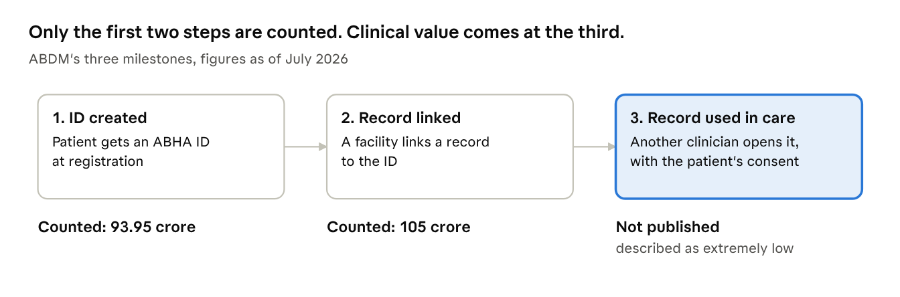
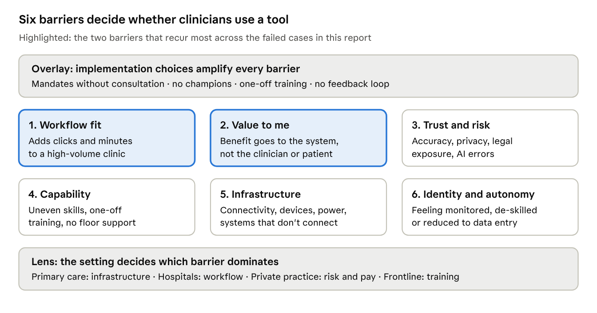

Case study · Digital health adoption
India has built the rails for digital health at a scale no other country has attempted. This case study looks at the next phase: what makes clinicians use digital tools in everyday care, and how product teams, consultants and implementation leaders can design for it.
Dr Meera runs a district hospital OPD with three minutes per patient. The new records system went live with a target: every patient leaves registration with a digital health ID. The dashboard turned green. But to see an old report, she had to send a consent request to a phone the patient often didn't have in hand. Re-ordering the free blood test was faster. So she did.
Dr Meera is an illustrative composite, not a real person or case, like every persona in the report.
India's national digital health numbers show remarkable enrolment. The next measure, not yet published, is how often clinicians use those records in care. That is where the next phase of value lies.
ABHA digital health IDs created.
Ministry of Health and Family Welfare, 10 July 2026health records linked to those IDs.
Ministry of Health and Family Welfare, 10 July 2026records opened by another clinician in care. A 15-interview study describes it as "extremely low".
Kommuru & Agarwal, HMPI, 2026
Clinicians are not the obstacle. In Indian surveys, 82–93% say they want digital tools, yet use stays low: in one Puducherry hospital, 82% of providers were willing to use mobile tools in care and 16% had. When asked why, they name time, legal risk, payment, missing equipment and missing support, not dislike of technology.
The counter-example. India's national telemedicine service, eSanjeevani, passed 50 crore consultations in September 2026. In over 93% of them a health worker registers the patient and runs the call, and the doctor does only the clinical part. When the tool is the work, clinicians use it at national scale.
Indian figures come from official data and mostly single-site surveys. Global studies are used where Indian evidence is missing, and the report labels the quality and transferability of each kind of evidence.
Drawing on around 40 cited sources, including Indian studies, government data and global research, I mapped six barriers that predict whether clinicians will use a tool. One overlay makes all of them worse, and one lens shows which barrier dominates where.

IT infrastructure in only 28% of primary health centres; no IT staff to fix it.
93% of doctors in one hospital wanted electronic records. Cost, staffing and internet blocked them.
74% of urologists knew the telemedicine rules; 53% still didn't use it, citing liability, pay and time.
English-only apps, one-day training and patchy phones and internet hold back health workers.
The report turns the Barrier Map into tools for the three people who decide whether a rollout works.
| Tool | For | What it does |
|---|---|---|
| Adoption-risk scorecard | Consultants | Seven questions scored 0–2 with clinicians, based on the NASSS-CAT approach. 10 or more out of 14 means redesign before launch |
| Product requirements checklist | Product teams | Eleven checks, from "the core task fits a real consultation" to "log retrieval and overrides, not just logins" |
| Clinician engagement plan | Change leaders | What clinicians, frontline staff and leaders do before build, before launch, at launch and after |
| Five-phase rollout playbook | Implementation leads | Diagnose, co-design, live pilot, scale and sustain, with gates passed on use, not installation, and KPIs beyond logins |
I trained as a dentist and in hospital administration, and I have worked inside India's digital health rollouts: overseeing UAT for the ABHA app as an ABDM project consultant, and leading UAT for the iECHO app. That experience showed me the gap this project is about. Testing checks whether a product meets its specification; adoption depends on whether it fits a three-minute consultation. The report adds clinical acceptance criteria, real-clinic testing and use-based KPIs to close that gap.
The 20-page report covers the evidence on scale versus use, the Barrier Map with signals and fixes, four personas, five case studies (eSanjeevani, Kerala e-Health, ABDM, Google's AI in Thailand and England's National Programme for IT), a practitioner lens, the toolkit, the rollout playbook and its limitations.